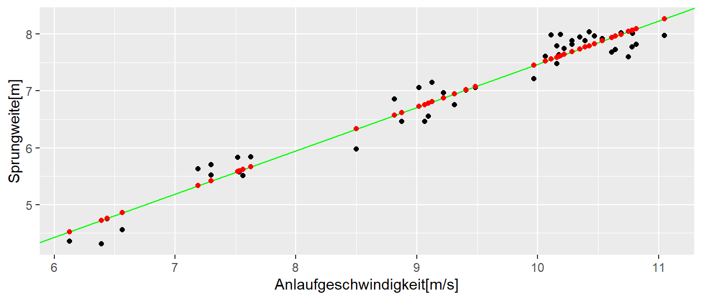
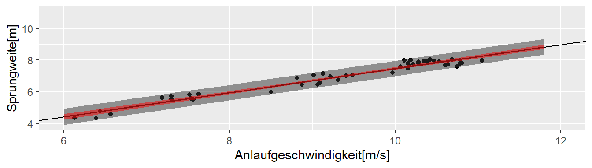
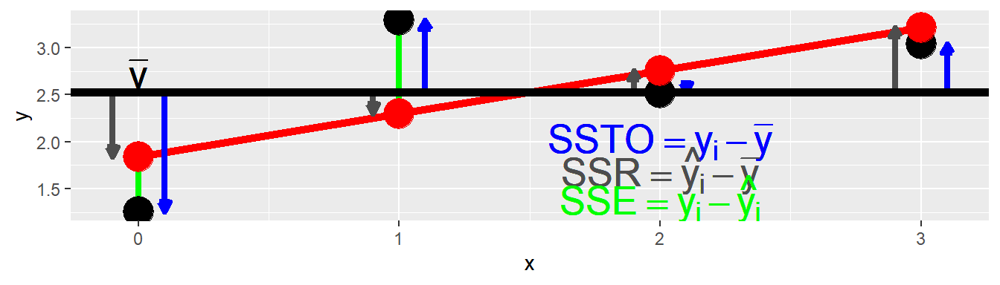
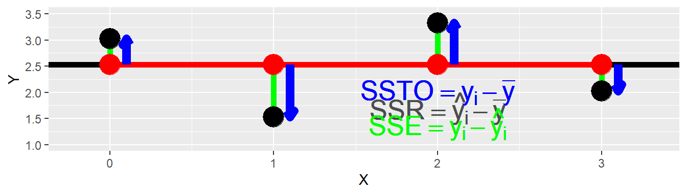

8 Vorhersage
8.1 Vorhergesagte Werte \(\hat{y}_i\)
Wenn ein einfaches lineares Modell gefittet wurde ist eine zentrale Frage welche Vorhersagen anhand des Modell getroffen werden können. Die Vorhersagen \(\hat{y}_i\) liegen auf der vorhergesagten Regressionsgerade und berechnen sich nach dem Modell für einen gegeben \(x\)-Wert.
\[ \hat{y} = \hat{\beta_0} + \hat{\beta_0} x \]
Wie schon mehrfach besprochen unterliegt die Regressionsgerade inherent der Unsicherheit bezüglich der geschätzen Modellkoeffizienten \(\hat{\beta}_0\) und \(\hat{\beta}_1\). Diese Unsicherheit überträgt sich auf die geschätzen Werte \(\hat{y}_i\) und muss daher bei deren Interpretation berücksichtigt werden.
In Abbildung 8.1 sind die bereits behandelten Sprungdaten gegen die Anlaufgeschwindigkeiten zusammen mit der Regressionsgeraden und vorhergesagten Werten (rot) abgetragen.

In R können die vorhergesagten Werte des mittels lm() gefitteten Modells mit der Hilfsfunktion predict() bestimmt werden. Wenn der Funktion predict() keine weiteren Parameter außer dem lm-Objekt übergeben werden, berechnet predict() die vorhergesagten Werte \(\hat{y}_i\) für alle die \(x\)-Werte die auch zum fitten des Modells benutzt wurden. Die Reihenfolge der Werte \(\hat{y}_i\) enspricht dabei den Werten im Original-data.frame().
predict(mod)[1:5] 1 2 3 4 5
4.523537 4.725140 4.856256 4.761778 5.416207 Wir haben uns hier nur die ersten fünf Werte ausgeben lassen, da nur demonstriert werden soll wie die predict()-Funktion angewendet werden kann. Um eine Anwendung zu geben, so können mittels predict() die Residuen auch von Hand ohne die resid()-Funktion erhalten werden.
(jump$jump_m - predict(mod))[1:5] 1 2 3 4 5
-0.16267721 -0.41248842 -0.29359256 -0.01047071 0.09927500 resid(mod)[1:5] 1 2 3 4 5
-0.16267721 -0.41248842 -0.29359256 -0.01047071 0.09927500 Wiederum nur zur Demonstration die ersten fünf Wert um die Äquivalenz der beiden Methoden zu demonstrieren.
Meistens liegt das Interesse jedoch weniger auf den vorhergesagten Werten \(\hat{y}_i\) für die gemessenen Werte, sondern es sollen Werte vorhergesagt werden für \(x\)-Werte die nicht im Datensatz enthalten sind. Operational ändert sich nichts, es wird immer noch das gefittete Modell verwendetet und es müssen lediglich neue \(x\)-Werte übergeben werden.
In R kann dies mittels des zweite Parameter in predict() erreicht werden. Soll zum Beispiel die Sprungweite für eine Anlaufgeschwindigkeit von \(v = 11.5[m/s]\) berechnen werden, muss zunächst ein neues tibble() erstellt werden, welches den gewünschten \(x\)-Wert enthält. Dabei muss der Spaltenname in dem neuen tibble() demjenigen im Original-tibble() entsprechen. Ansonsten funktioniert die Anwendung von predict() nicht.
df <- tibble(v_ms = 11.5)
df# A tibble: 1 × 1
v_ms
<dbl>
1 11.5Dieses tibble() kann nun zusammen mit dem lm()-Objekt an predict() übergeben werden.
predict(mod, newdata = df) 1
8.614136 D.h., bei einer Anlaufgeschwindigkeit von \(v = 11.5[m/s]\) ist anhand des Modells eine Sprungweite von \(8.6m\) zu erwarten.
8.2 Unsicherheit in der Vorhersage
Wie schon angesprochen ist unser Modell natürlich mit Unsicherheiten behaftet. Diese drücken sich in den Standardfehler für die beiden Koeffizienten \(\hat{\beta_0}\) und \(\hat{\beta_1}\) (siehe Tabelle 8.1).
| Schätzer | \(s_e\) | |
|---|---|---|
| (Intercept) | -0.14 | 0.23 |
| v_ms | 0.76 | 0.02 |
Der vorhergesagte Wert \(\hat{y}\) ist daher für sich alleine ist noch nicht brauchbar, da auch Informationen über dessen Unsicherheit notwendig sind um die Ergebnisse korrekt zu interpretieren.
Es können zwei unterschiedliche Anwendungsfälle voneinander unterschieden werden.
- Der mittlere, erwartete Wert \(\hat{\bar{y}}_{neu}\)
- Die Vorhersage eines einzelnen Wertes \(\bar{y}_{neu}\)
Im konkreten Fall werden damit zwei unterschiedliche Fragestellungen beantwortet. Im 1. Fall lautet die Frage, ich habe eine Trainingsgruppe und möchte wissen was der mittlere Wert der Gruppe anhand des Modells ist, wenn alle eine bestimmte Anlaufgeschwindigkeit \(v_{neu}\) haben. Im 2. Fall lautet die Frage welche Weite eine einzelne Athletin für die Anlaufgeschwindigkeit \(v_{neu}\) springen sollte. In beiden Fällen werden keiner genau den Wert des Regressionsmodells treffen, aber im 1. Fall der Gruppe werden sich Streuungen nach oben bzw. nach unten gegenseitig im Schnitt ausbalancieren während im 2. Fall der einzelnen Athletin dies nicht der Fall ist. Daher hat die Vorhersage im 2. Fall eine höhere Unsicherheit. Diese Unterschied sollte sich dementsprechend in den Varianzen der beiden Vorhersagen wiederspiegeln.
Wie bereits erwähnt, der vorhergesagte Wert \(\hat{y}_{neu}\) ist in beiden Fällen gleich und entsprecht der oben beschriebenen Methode anhand des Modell \(y_{neu} = \hat{\beta}_0 + \hat{\beta}_1 \times x_{\text{neu}}\).
Für den erwarteten Mittelwert errechnet sich die Varianz nach:
\[\begin{equation} Var(\hat{\bar{y}}_{neu}) = \hat{\sigma}^2 \left[\frac{1}{n} + \frac{(x_{neu} - \bar{x})^2}{\sum(x_i - \bar{x})^2}\right] = \hat{\sigma}_{\hat{\bar{y}}_{neu}}^2 \end{equation}\]
Das dazugehörige Konfidenzintervall errechnet sich danach mittels:
\[\begin{equation} \hat{\bar{y}}_{neu} \pm q_{t(1-\alpha/2;n-2)} \times \hat{\sigma}_{\hat{\bar{y}}_{neu}} \end{equation}\]
Die Varianz für die Vorhersage eines einzelnen Wertes errechnet sich:
\[\begin{equation} Var(\hat{y}_{neu}) = \hat{\sigma}^2 \left[1 + \frac{1}{n} + \frac{(x_{neu} - \bar{x})^2}{\sum(x_i - \bar{x})^2}\right] = \hat{\sigma}^2 + \hat{\sigma}_{\hat{\bar{y}}_{neu}}^2 = \hat{\sigma}_{\hat{y}_{neu}}^2 \end{equation}\]
Was wiederum zu dem folgenden Konfidenzintervall führt:
\[\begin{equation} \hat{y}_{neu} \pm q_{t(1-\alpha/2;n-2)} \times \hat{\sigma}_{\hat{y}_{neu}} \end{equation}\]
In beiden Fällen ist der Term
\[ \frac{(x_{neu} - \bar{x})^2}{\sum(x_i - \bar{x})^2} \]
enthalten. Anhand des Zählers kann abgeleitet werden, dass die Unsicherheit der Vorhersage mit dem Abstand vom Mittelwert der \(x\)-Werte zunimmt. Rein heuristisch macht dies Sinn, da davon ausgegangen werden kann, dass um den Mittelwert der \(x\)-Werte auch die meiste Information über \(y\) vorhanden ist und dementsprechend umso weiter die Werte sich vom \(\bar{x}\) entfernen die Information abnimmt. Im Nenner ist wiederum wie auch beim Standardfehler \(\sigma_{\beta_1}\) des Steigungskoeffizienten \(\beta_1\) zu sehen, dass die Varianz abnimmt mit der Streuung der \(x\)-Werte. Daher, wenn eine Vorhersage in einem bestimmten Bereich von \(x\)-Werten durchgeführt werden soll, dann sollte darauf geachtet werden möglichst diesen Bereich auch zu samplen um die Unsicherheit so klein wie möglich zu halten.
8.3 Vorhersagen in R mit predict()
8.3.1 Erwarteter Mittelwert
df <- data.frame(v_ms = 11.5) # oder tibble(v_ms = 11.5)
predict(mod, newdata = df, interval = 'confidence') fit lwr upr
1 8.614136 8.482039 8.7462348.3.2 Individuelle Werte
predict(mod, newdata = df, interval = 'prediction') fit lwr upr
1 8.614136 8.118445 9.1098278.4 Konfidenzintervalle graphisch

Weiterführende Literatur sind Kutner u. a. (2005)
8.5 \(R^2\) und Root-mean-square
8.6 Einfaches Modell
mod0 <- lm(y ~ x, simple)
summary(mod0)
Call:
lm(formula = y ~ x, data = simple)
Residuals:
1 2 3 4
-0.5817 0.9898 -0.2345 -0.1736
Coefficients:
Estimate Std. Error t value Pr(>|t|)
(Intercept) 1.8414 0.7008 2.628 0.119
x 0.4574 0.3746 1.221 0.346
Residual standard error: 0.8376 on 2 degrees of freedom
Multiple R-squared: 0.4271, Adjusted R-squared: 0.1406
F-statistic: 1.491 on 1 and 2 DF, p-value: 0.34658.7 Nochmal Abweichungen
Gesamtvarianz: \[ SSTO := \sum_{i=1}^N (y_i - \bar{y})^2 \]
Regressionsvarianz: \[ SSR :=\sum_{i=1}^N(\hat{y}_i - \bar{y})^2 \]
Residualvarianz: \[ SSE := \sum_{i=1}^N (y_i - \hat{y}_i)^2 \]
8.8 Verhältnis von \(SSR\) zu \(SSTO\)

\[ \frac{SSR}{SSTO} = 1 \]

\[ \frac{SSR}{SSTO} = 0 \]
8.9 Determinationskoeffizient \(R^2\)
Es gilt: \(SSTO = SSR + SSE\)
\[ R^2 = \frac{SSR}{SSTO} = 1 - \frac{SSE}{SSTO} \in [0,1] \] 1
8.9.1 Korrigierter Determinationskoeffizient \(R_a^2\)
\[ R_a^2 = 1 - \frac{\frac{SSE}{n-p}}{\frac{SSTO}{n-1}} = 1 - \frac{n-1}{n-p}\frac{SSE}{SSTO} \]
Bei der einfachen Regression gilt: \(r_{xy} = \pm\sqrt{R^2}\)↩︎